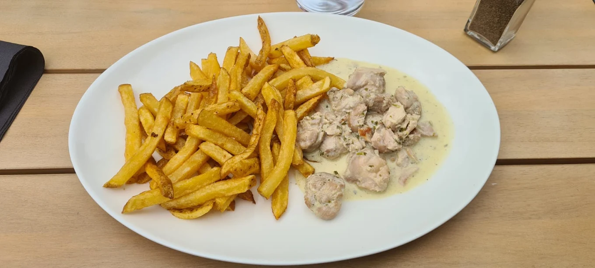

Les Tables de la Fontaine
Restaurant & bar à cocktails à Biscarrosse
Une terrasse, un cocktail, un bon repas et l’esprit des vacances au 540 chemin de Bimbo.
À Biscarrosse, Les Tables de la Fontaine vous accueille dans un cadre calme et verdoyant pour déjeuner, dîner ou partager un verre entre amis.
Bienvenue aux Tables de la Fontaine
“Aux Tables de la Fontaine, on vient pour partager un bon moment : un déjeuner en famille, un dîner entre amis, un cocktail en terrasse ou une pause gourmande dans l’esprit des vacances landaises.”

Cuisine conviviale
Des plats simples, généreux et savoureux, pensés avec soin pour se faire plaisir.

Bar à cocktails
Classiques, créations inspirées, apéritifs rafraîchissants et verres à partager en terrasse.

Cadre nature
Un environnement calme, verdoyant et boisé, idéal pour profiter pleinement de Biscarrosse.
Ce que disent nos clients
“Merci à nos clients pour leurs avis et leur fidélité. Vos retours nous aident à faire vivre Les Tables de la Fontaine jour après jour.”
Les avis affichés proviennent de la fiche Google officielle du restaurant.
Tout savoir sur Les Tables de la Fontaine
Horaires, brunch, réservation, terrasse, menu enfant… Les réponses à vos questions avant votre visite à Biscarrosse.
Quels sont les horaires du restaurant ?
Les Tables de la Fontaine est ouvert 7 jours sur 7. Service du midi de 10h00 à 14h00, service du soir de 17h30 à 22h00. Un brunch dominical est proposé chaque dimanche de 11h00 à 14h00. En haute saison, un service continu sur les boissons fraîches est assuré.
Le restaurant propose-t-il un brunch le dimanche ?
Oui, chaque dimanche de 11h00 à 14h00, la formule brunch est disponible à 24€ par personne. Elle comprend boissons chaudes, jus de fruits frais pressés, viennoiseries du jour, pains et confitures artisanales, œufs brouillés et bacon grillé, sélection de fromages affinés et salade de fruits de saison. Réservation fortement conseillée.
Comment réserver une table ?
Réservez en ligne via notre formulaire de réservation, ou directement par téléphone et SMS au 06 35 34 59 67. Pour une confirmation immédiate | notamment le jour même | privilégiez le téléphone. L'équipe vous recontacte rapidement pour confirmer votre table.
Le restaurant dispose-t-il d'une terrasse ?
Oui, Les Tables de la Fontaine dispose d'une grande terrasse en bois ombragée sous les pins landais, dans un cadre naturel et verdoyant. Idéal pour déjeuner ou dîner en plein air à Biscarrosse, avec un bar extérieur et une ambiance vacances.
Y a-t-il un menu enfant ?
Oui, un menu enfant à 12€ est disponible pour les moins de 12 ans, incluant une boisson sirop au choix, un plat (tenders de poulet ou cordon bleu croustillant avec frites maison) et 2 boules de glace au choix.
Où se trouve le restaurant à Biscarrosse ?
Le restaurant est situé au 540 chemin de Bimbo, 40600 Biscarrosse, dans les Landes. Cadre calme et boisé, à proximité du lac de Biscarrosse. Accessible en voiture depuis Biscarrosse-Bourg et Biscarrosse-Plage. Voir le plan d'accès.
Vous souhaitez réserver une table ?
Pour un déjeuner, un dîner en terrasse ou une soirée cocktail, contactez notre équipe ou complétez notre formulaire en ligne.